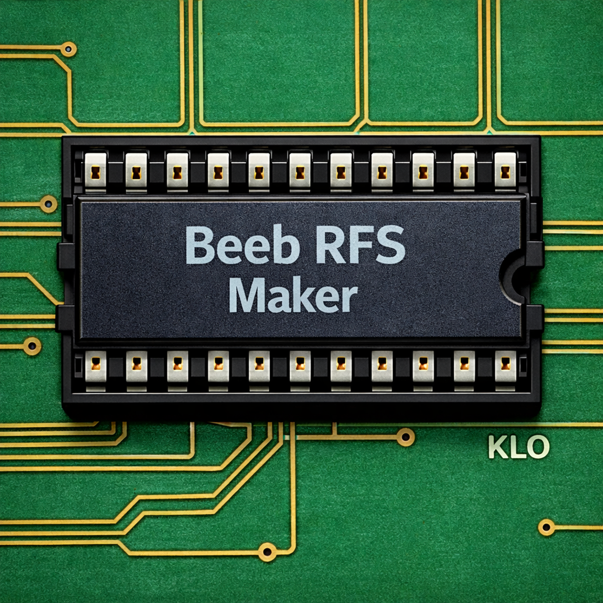

ROM Filing System packer and extractor to let your Windows PC make RFS ROM images for the BBC Micro
Windows WinUI 3 Microsoft Store BBC Micro FreeBeebRFSMaker is a Windows application for packing files into a BBC Micro ROM Filing System image, and extracting files back out again. It handles three RFS formats: standard, uncompressed RFS, comprom (CompRFS), compatible with the comprom.pl v2.10 format by Greg Cook, and KLOComp Lempel-Ziv, which fits the most into the same 16 KB. It produces sideways ROM images that can be used directly with a BBC Microcomputer or emulator.

To use it, simply drag and drop files from your PC onto the area labelled "Drop PC files here". The files will be listed
in the area below with their names, load and exec addresses, and sizes in bytes. The files in the list are packed
into a ROM image, compressed or not according to the format you choose. By using the radio buttons at the top you can see the content of the selected file from the list,
or the ROM image, or the Event Log, in the preview window, which takes up most of the left-hand side of the app. When
a file is shown, that preview window is also a hex editor. See Editing file content. If the
total file size after compression fits within a 16 KB ROM then the Save RFS ROM button, which shows how
many files are in the image, will be enabled, and you can choose where to save the ROM image with a
.rom extension. If you attempt to
add a file which will clash with the name of one already in the list, it will not be included and you will be informed
and given advice on workarounds.

BeebRFSMaker launch screen
The RFS Type selector above the drop area chooses which of the three formats to build. Standard is plain RFS with nothing to decode at run time, readable by any tool. Comprom is Greg Cook's format and fits far more into the same 16 KB. LZ77 is KLOComp Lempel-Ziv, which fits more still. You can switch between them at any time and the image is rebuilt from the same file list.
The same seven files make the point. As they stand they amount to 14,608 bytes, and a standard ROM built from them fills 15,218 of the 16 KB, or 92%, with barely room for anything else. Under comprom the content comes to 11,293 bytes and the finished image occupies 13,231, or 80%. Under Lempel-Ziv it comes to 10,775 and the image occupies 12,111, or 73%, leaving over 4 KB spare. In every case the ROM used is larger than the content total, because each file carries block headers and checksums, and a compressed ROM additionally carries its decompressor stub, with comprom carrying its dictionary as well.

Seven files as a standard RFS ROM, using 15,218 bytes, 92% of the 16 KB. With Standard selected the Catalog field is greyed out, since a plain RFS ROM has no catalogue title to put there

The same seven files under comprom, using 13,231 bytes, 80%. The (*) marks a file edited but not yet applied; an L in the list marks a locked file
The most up-to-date version of this information will always be the online version.
A 16 KB ROM holds only so much, and it is easy to add one file too many. When that happens the app says so rather than leaving you to work it out: a ROM Full message gives the size of the ROM and how far over it the files went, and the same wording stays on the status line at the bottom of the window in orange until the next successful build.

Too much content for a 16 KB compressed ROM. The shortfall is given in bytes, in decimal and hex
A standard, uncompressed ROM words it slightly differently, as at least so many bytes. Either compressed format works out the whole layout before it discovers the overflow, so the figure is the exact total; packing an uncompressed one stops at the first block that will not fit, so what it can honestly report is a lower bound. Either way it tells you the order of the problem, whether you are a couple of hundred bytes over or several thousand.

The same situation on a standard RFS ROM, where the shortfall is reported as a minimum
Nothing is lost. The ROM image you had before the change is kept and is still what the ROM Image pane shows, and the Save RFS ROM button stays disabled so a ROM that does not match the file list can never be written out. Remove a file, shorten one, or switch to a format that holds more, standard to comprom or comprom to Lempel-Ziv, and the image is rebuilt around what is left.
The status line is worth watching before you get that far. It reports the total content size and how much of the ROM the built image actually occupies, as a byte count and a percentage. The ROM header takes up room that the content total alone does not account for, and so do the decompressor stub of either compressed format and, under comprom, its dictionary.
.inf sidecar file formatWhen packing, BeebRFSMaker reads the accompanying .inf sidecar file for each PC file if one exists. When extracting, it creates one alongside each extracted file.
The .inf file is the de facto standard
for preserving BBC Micro file metadata on a modern PC filing system, and is recognised by BeebEm and most other emulators
and tools in the BBC Micro ecosystem.
Each .inf file is a single line of plain text with the following fields, separated by whitespace:
$.FILENAME LLLLLLLL EEEEEEEE SSSSSS Locked
Where:
$.FILENAME: the BBC Micro filename, including the DFS directory prefix (usually $ for the default directory, not used in the cassette or ROM filing systems)FFFF1900)FFFF1900)Both addresses are written as eight hex digits, so a full 32-bit address is stated outright. Sidecar files are
read tolerantly, so the shorter four- and six-digit forms written by other tools, and by earlier versions of these
tools, are still accepted, with truncated high bits restored as needed. Existing .inf files therefore keep
working unchanged. Note that files extracted from a ROM image have no $. directory prefix, since the ROM
filing system has no directories.
The load address is the 6502 memory address at which the file should be loaded when transferred back to a BBC Micro.
The execution address is the address to jump to if the file is run with *RUN or CHAIN"".
For non-executable files such as data files these two addresses are often identical. Addresses are stored as 32-bit values to
accommodate the Master 128’s extended address space, though on a Model B only the lower 16 bits are significant.
The lock field marks a file as protected. A locked file can be *RUN on a BBC Micro but not
*LOADed, an attempt to load it answering with Locked. That was the usual way of
discouraging casual copying in the cassette era. BeebRFSMaker reads the field when packing and sets the protection bit in
the ROM image, so the BBC treats the file as locked, and a locked file is shown with an L after its size in the
Beeb file list. Extracting puts the lock back into the .inf file it writes.
Two spellings are in circulation: the full word Locked, and the single letter L that some
tools write. Both are accepted when reading. Locked is always what gets written, since it is the form every
reader of the format understands. The field sits after the length, but the length itself is optional in the wider
convention, so it is recognised wherever it appears rather than by counting along the line.
Example: the .inf files for a BBC BASIC program called GAME, and a locked machine code file:
$.GAME 00001900 00008023 003A4F $.DEFENMC 00001900 00000E00 002300 Locked


If you drop a .rom file onto the app it will offer to extract the content into a location of your choice, and optionally add those files to whatever is already in the list. All three formats are recognised, standard, comprom and KLOComp Lempel-Ziv, and the Event Log records which kind was detected and which files came out of it. You can also use this feature just to extract files from a compatible ROM image. The corresponding .inf file will be created during extraction.
With the File radio button selected, the preview pane on the left is a hex editor as well as a viewer. Click
anywhere in the hex column or the ASCII column of the selected file and type to change a byte. The two columns stay
in step, so overstriking 41 in the hex column shows A in the ASCII column, and typing
A in the ASCII column shows 41 in the hex column. The ASCII column accepts any printable
character from &20 to &7E; bytes outside that range are displayed as
¿ and have to be entered in the hex column.

Editing the in-memory copy of a file before it is saved to a sideways ROM image
Editing is strictly overstrike: the byte under the cursor is replaced by the one you type and the file keeps exactly the length it had. There is no way to insert or delete bytes, which keeps each file’s load address, execution address and length valid without your having to adjust them by hand.
Files you have edited are marked with (*) in the file list, meaning that file now differs from the ROM
image last built from it. Press Apply to rebuild the image around your edits, at which point the markers
clear. The rebuild is deliberately not automatic: in a comprom ROM the whole file set shares a single dictionary,
so one changed byte can alter the compression of every file, and repacking on each keystroke would be both slow and
confusing to watch. A Lempel-Ziv ROM compresses each file on its own, so the effect is contained, but the rebuild
still waits for Apply so that the two formats behave the same way. Saving the ROM image applies any outstanding edits first, so what you save always matches what
you see.
Nothing is written back to the files on your PC. Edits apply only to the app’s in-memory copy of the file that goes into the ROM image, so the original on disk is untouched. To abandon an edit, remove the file from the list and add it again.
The ROM and Event Log views are read-only. A ROM image is regenerated from the file list every time it is built, so editing its bytes directly would only be undone by the next rebuild. The parts of the image that are yours to set are the ROM title and the catalogue title, the latter labelled Catalog in the app, and both have their own text boxes above the preview pane.
The Load and Exec fields beneath the file name are editable. Click into either, type a new address, and
press Enter or move away from the field: the address is written to the selected file and the ROM image is
rebuilt around it straight away. Both are shown in full as eight hex digits, so a host address such as
FFFF1900 can be read and typed exactly as the BBC states it, rather than in a shortened form that
leaves you guessing at the high bits.
Typing is overstrike here too: each keystroke replaces the digit under the cursor, so the field always holds
a complete address and can never be left half-finished. Only the hex digits 0–9 and
A–F are accepted.
The Size field alongside them is shown for reference but cannot be edited. A file’s length is whatever its contents amount to, and the hex editor above deliberately preserves it.
A BBC BASIC program dropped in without a .inf file beside it is now given the host addresses
FFFF1900 and FFFF8023. Those are PAGE and the BASIC entry point, marked as
being in the host rather than across the tube, which is what a program loaded from a ROM filing system wants.
Files taken off a .ssd or .dsd disk image, by
BBCReadDiskImage or a similar tool, arrive with the drive and directory
written into the PC file name, as 0_$.MAKERFS or 0_P.MakeRFS. Drop those in and the drive
and directory are stripped off, since a ROM filing system has no directories: they go in as MAKERFS and
MakeRFS. A name can no longer keep a dot either, which the BBC would read as a directory separator.
Where two files differ only by the directory they came from, their names collide once the directory is dropped. You
are offered the directory letter as a prefix so both can go in, so that the copy from P becomes
PMakeRFS, or you can decline and leave that file out. The root directory $ is never
offered as a prefix, since it says nothing about where a file came from.
A .inf file dropped alongside the file it describes is read for that file’s addresses and quietly
consumed, rather than being added to the ROM as a file in its own right. One dropped on its own asks what you meant,
and will still be added if that is what you want.
Rather than using old-style, UV-erasable EPROMs, I bought five compatible AT28C256-15PU EEPROMs for around $11 on Amazon. The "256" in the part number refers to its 256 Kbit capacity (32 KB), and the "-15" indicates a 150 ns access time. I use the upper 16 KB since the A14 address line is held high, making that half of the capacity visible to the Beeb. The chips linked to are second-hand; one arrived missing a leg and was discarded, but the rest all worked. I used the Xgecu T48 TL866-3G EEPROM Programmer with the downloadable Xgpro software to "burn" the EEPROM content. The EEPROMs I have created so far all worked in my actual BBC Micro.
The Event Log shows what each format made of the same seven files, so the three can be compared directly. The same 14,608 bytes of content fills 15,218 bytes of ROM as standard RFS (92%), 13,231 under comprom (80%), and 12,111 under Lempel-Ziv (73%).

Packing as a standard RFS ROM, where the files are stored as they stand

The same files under comprom, showing what each one compressed to

The same files under Lempel-Ziv, with 14,608 bytes of files compressed to 10,775 and 1,336 bytes of header, decompressor and catalogue on top, filling 12,111 of the 16 KB and leaving 4,273 spare. The asterisks mark two files stored as they stand, because compressing them made them bigger

Extracting files from an existing RFS ROM image, with optional .inf sidecar files
Drag and drop a set of files onto the app, or pick them with the Add files button, and pack them into a standard 16 KB sideways ROM image. BBC Micro filenames, load addresses, and execution addresses are read from .inf sidecar files if present.
Build a standard, uncompressed RFS ROM, a comprom (CompRFS) ROM, or a KLOComp Lempel-Ziv ROM from the same file list, using the RFS Type selector. Switching format repacks the same files, so you can see what each one costs before choosing.
Open any compatible RFS ROM image in any of the three formats, the format being detected from the ROM header, and extract its files back to a folder. The .inf sidecar files generated alongside them use the format that has become the de facto standard for preserving BBC Micro metadata: filename, load and execution addresses, and file length.
The preview pane doubles as a hex editor for the selected file. Overstrike bytes in either the hex or the ASCII column, then press Apply to rebuild the ROM image around your changes. Edits are made to the copy held for packing, so the files on your PC are never modified. See Editing file content.
Type a new load or execution address into its field and press Enter, and the ROM image is rebuilt around it. Both are shown in full as eight hex digits so a host address such as FFFF1900 reads as the BBC states it. The length is shown alongside but is not editable. See Editing load and execution addresses.
Files exported from a .ssd or .dsd image keep their BBC names: the 0_$. drive and directory prefix is stripped, and where two files clash the directory letter is offered as a prefix instead. Matching .inf files are read as metadata rather than packed. See Files exported from a disk image.
The pack output shows each file’s raw and compressed sizes so you can see at a glance how efficiently your files compress, and whether everything fits in the 16 KB slot.
Produces byte-identical ROM images to the original comprom.pl v2.10 Perl script by Greg Cook, so ROMs built with BeebRFSMaker work with any BBC Microcomputer or emulator such as BeebEm.
Customise the ROM title (shown by *ROMS) and the catalogue title (shown by *CAT), each in its own field above the preview pane. The catalogue title applies to comprom ROMs only, and the field is greyed out for the other two formats, neither of which writes one.
A corresponding command-line tool, BeebRFSTool, which uses the same pack and extract classes as the GUI app, provides a full command-line interface for scripting and automation, compatible with batch files and build pipelines.

The Compressed ROM Filing System format, created by Greg Cook, stores files in a standard BBC Micro 16 KB sideways ROM using a compressed stream that begins after a conventional Acorn ROM header at &8000 and a small 6502 decompressor stub at &8040. The stream uses four compression mechanisms: a digraph table of up to 31 frequent two-byte pairs each encoded as a single byte token, a dictionary of up to 128 longer repeated sequences each referenced by a two-byte address token, run-length encoding for repeated byte values, and literal escape sequences for bytes that cannot otherwise be represented. Dictionary entries may chain up to nine levels deep, and since the ROM Filing System requires each file header to be directly addressable, each file’s stream is generated separately and chained to the next via a link field. The result is a self-delimiting compressed stream that the decompressor stub decodes on the fly in response to standard MOS ROM Filing System service calls, requiring no RAM workspace beyond a handful of zero-page locations.
BeebRFSMaker implements the full comprom.pl v2.10 compression algorithm:
The compressor analyses all the files together to build a shared dictionary, so common patterns across multiple files all benefit from the same tokens.
A standard, uncompressed RFS ROM is simpler: after the Acorn ROM header comes a short service handler, and then the file blocks are stored verbatim, with no dictionary, no digraph table and no decompressor stub. It holds far less in the same 16 KB, but the layout is plain to read and nothing has to be decoded at run time. Because such a ROM has no language of its own, the language entry point at &8000 is left unused.
The KLOComp Lempel-Ziv format takes a different approach again. Each file is compressed as an LZ77 stream over a
192-byte sliding window, and a format descriptor carrying the signature KZ sits at a fixed
&8040 so a tool can identify the image without first working out how long the code is. Its advantage
over comprom comes from three places: there is no dictionary or digraph table to carry, the decompressor stub is
smaller, and the cassette block headers the MOS asks for are synthesised as it asks for them rather than being stored,
which on a ROM holding a dozen files is a useful amount of space not spent on framing. A catalogue of the files is held
uncompressed so that any one of them can be found directly.
Each file is compressed on its own, starting from an empty window, rather than the whole set sharing one stream. That
gives up a little compression on small files, and a file that would grow is simply stored as it stands, marked
with an asterisk in the Event Log. What it buys is that reaching the last file does not require expanding every file
before it, so any single file loads at once. Unlike a plain RFS ROM, the language entry point holds a real
JMP, which is also what tells the format apart from the other two at a glance.
The app can be installed from:
Requires Windows 10 (build 1809) or later, or Windows 11.
BeebRFSMaker handles the Compressed ROM Filing System v2.10 format, standard, uncompressed RFS, and KLOComp Lempel-Ziv. ROM images produced by BeebRFSMaker can be used with:
All three formats are self-contained sideways ROMs that need nothing but the ROM socket, so the choice between them is about how much fits rather than about what will run it. Comprom is the one to pick where another tool has to read the image back, since it is the only one of the three with an existing implementation elsewhere.
When reading an uncompressed ROM, the unused language entry point at &8000 may be filled with either three
NOP instructions or three zero bytes; both conventions are recognised.
BeebRFSMaker is free software. The CompRFS format and original comprom.pl script are by Greg Cook.
← BeebRFSTool ← Back to KLO Software